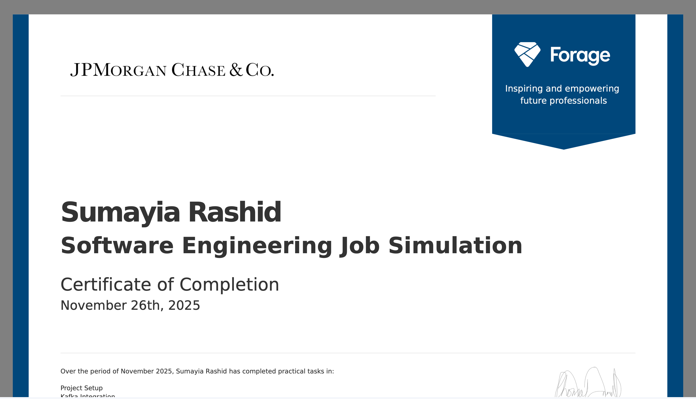
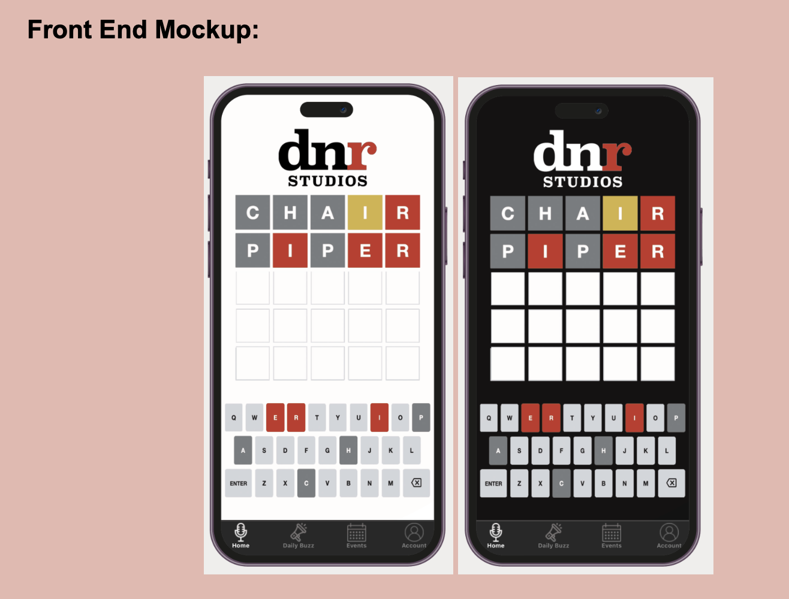
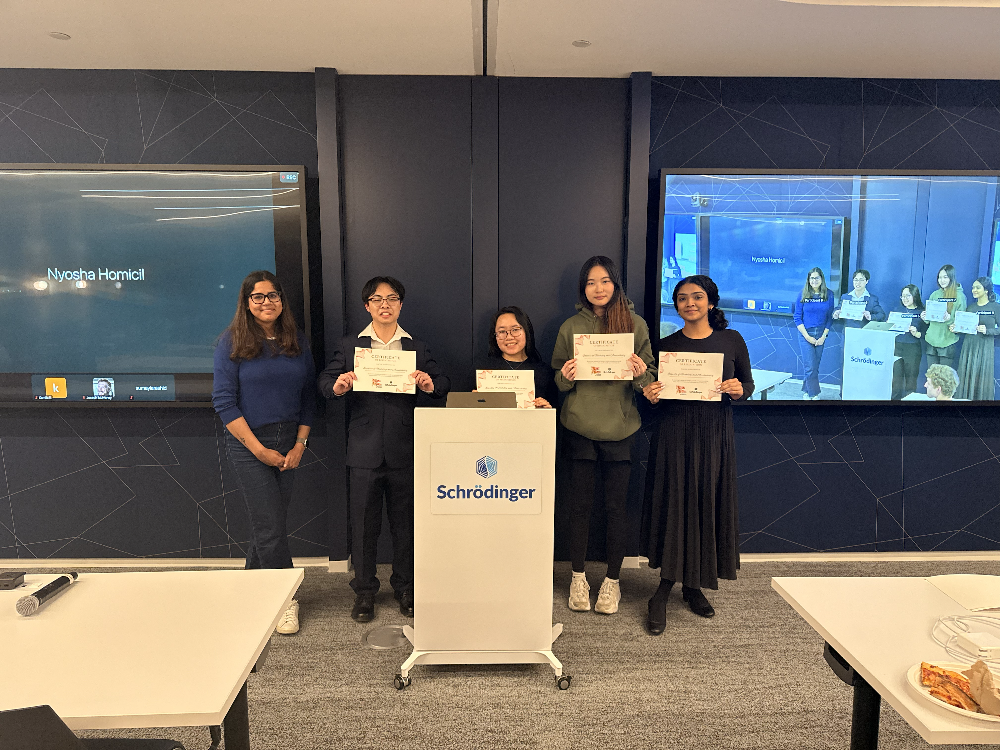
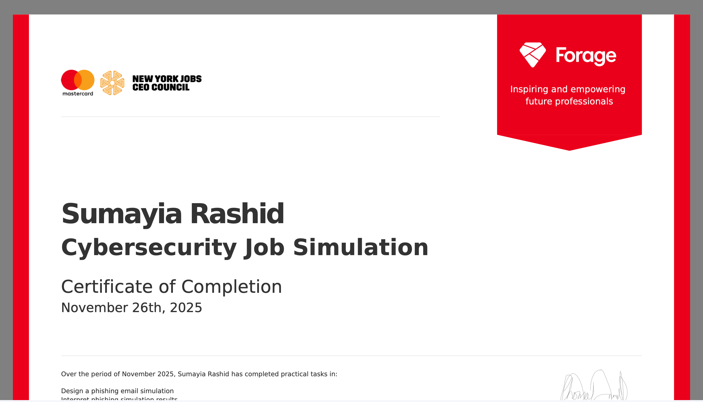
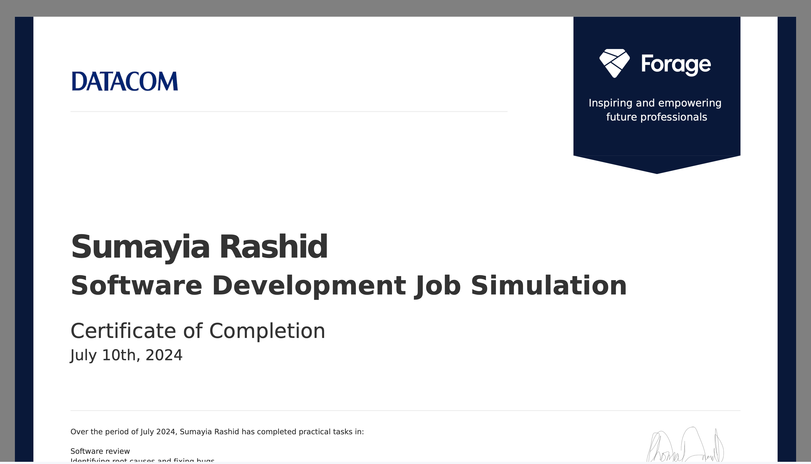
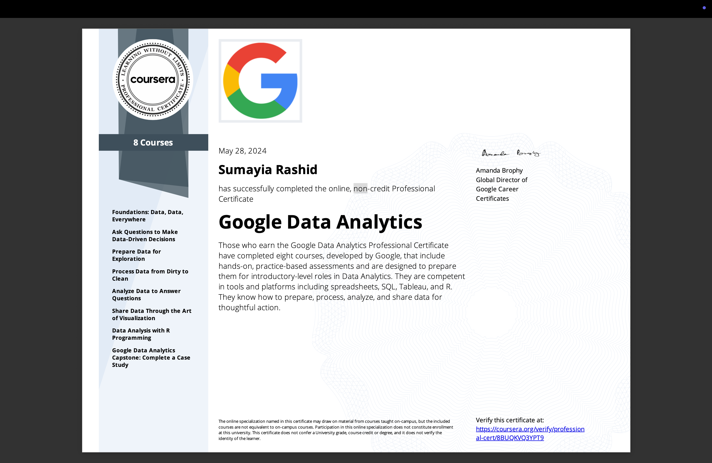
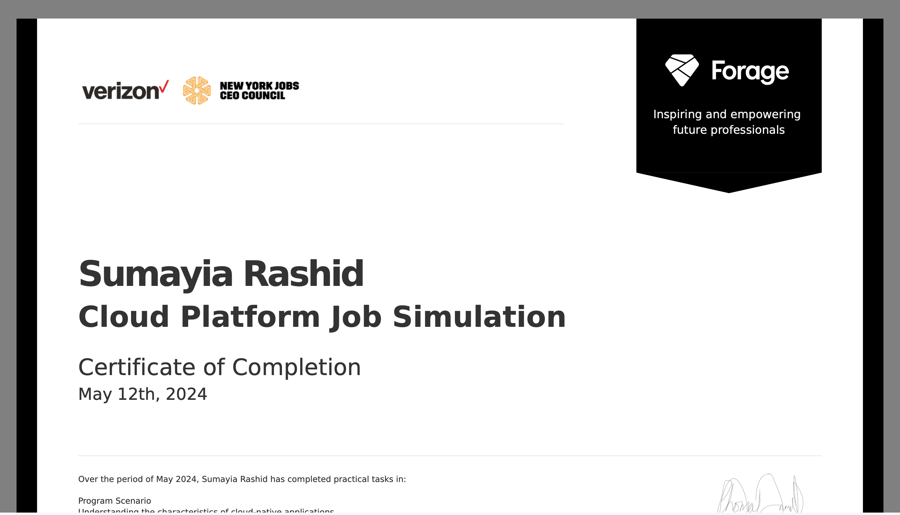
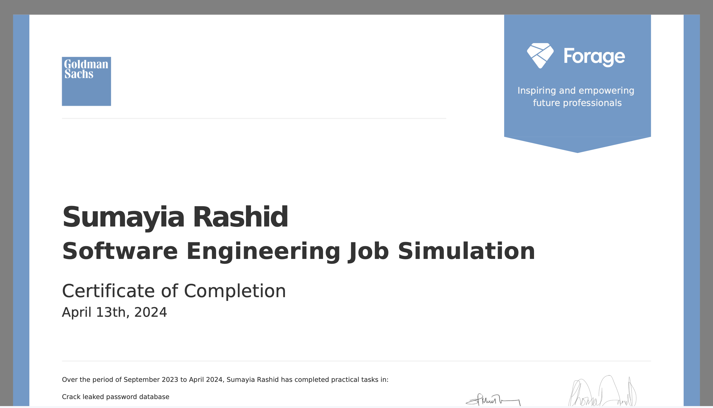
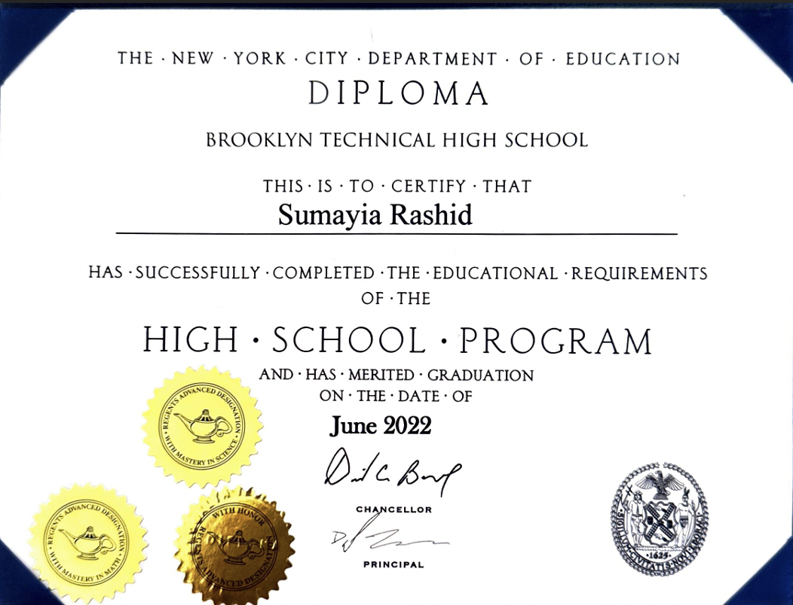
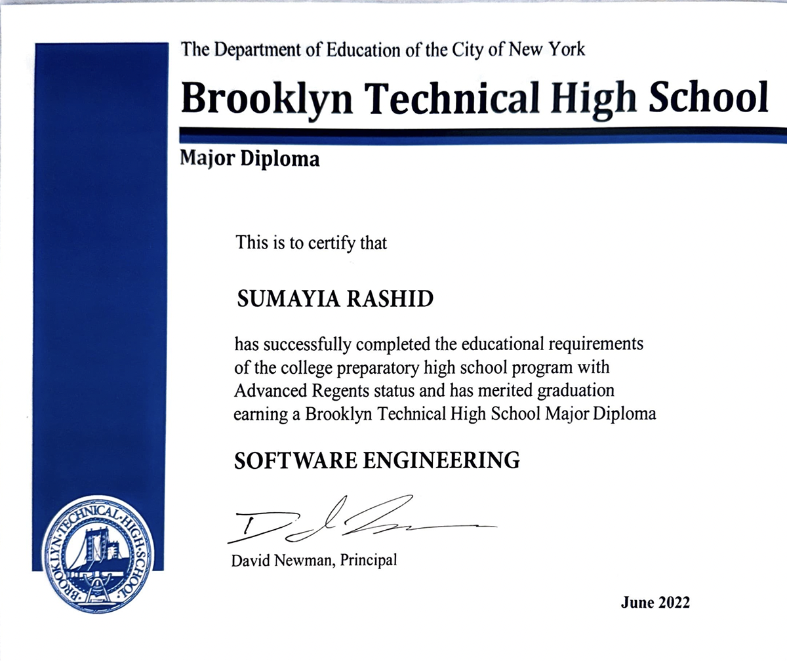

2025
JPMorgan Chase Software Engineering Job Simulation
Certificate of completion for the JPMorgan Chase software engineering job simulation through Forage.

Software Engineer • NYC Raised
Leadership Experience
Starting August 2026
M.S. Data Science
August 2022 - May 2026
B.A. Computer Science
2022
Software Engineering Major
Relevant coursework: Cyber Security; AP Computer Science - Java; AP Computer Science Principles; PLTW Digital Electronics with Arduino; Web Development; Big Data: Warehousing and Analytics; Fundamentals of IT Infrastructure.
2026
Software Engineer, Product Design, Behavioral UX
A current capstone product built with a React + Vite frontend and a FastAPI backend, with Supabase connectivity and Spoonacular-powered recipe search by ingredients.
Focused on reducing decision friction in meal planning while coordinating work across product, UX, and engineering.
Current Project2026
Lead App Development Intern
Worked on backend development for a DNR Studios word game project built around MVVM architecture.
Focused on backend logic and application structure while coordinating against the frontend mock and view-model flow.

2026
Frontend Engineer
A chemical similarity search application built during Stack the Future 2026. The project accepts SMILES strings and returns chemically similar compounds using Flask, RDKit fingerprints, and the ChEMBL database.
Contributed to the frontend and helped the team turn technical chemistry workflows into a usable search interface.

2024
Software Engineer
A web application that uses the multimodal capabilities of the Google Gemini API to generate personalized workout regimens for users.
Built with a team to turn AI-generated fitness planning into a usable web tool with clear output and actionable flows.
Mentored by Ariel Avshalom.
2023
Software Engineer, UX Researcher, Experience Designer
An AI-supported learning tool built for HackPrinceton F'23 with a React + Vite frontend, an Express backend, and OpenAI-powered question, hint, and answer generation.
Built with a team at HackPrinceton to make learning support more accessible through guided questions, hints, and answers.
Credentials
2025
Certificate of completion for the JPMorgan Chase software engineering job simulation through Forage.

2025
Certificate of completion for the Mastercard cybersecurity job simulation through Forage.

2024
Certificate of completion for the Datacom software development job simulation through Forage.

2024
Certificate of appreciation recognizing Student Ambassador leadership.
2024
Google Career Certificate completed through Coursera.

2024
Certificate of completion for the Verizon and New York Jobs CEO Council cloud platform simulation through Forage.

2024
Certificate of completion for the Goldman Sachs software engineering job simulation through Forage.

2022
Google Computer Science Summer Institute certificate.
2022
Brooklyn Technical High School diploma.

2022
Brooklyn Technical High School major diploma in software engineering.

2026
Research Communication
A presentation that highlights my behavioral design thinking, research framing, and the way I communicate product rationale to collaborators and stakeholders.
2026
Frontend Engineering Exploration
A separate web project focused on frontend implementation, interface structure, and narrative flow.